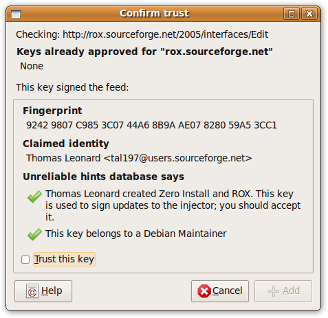

Security¶
This page describes Zero Install's security model.
I've noticed that if you describe a security model with digital signatures and GPG keys, people start worrying about all kinds of unlikely theoretical exploits. Whereas if you just stick software on the web with no security what-so-ever, everyone seems completely happy to use it. But for those few people who do care about security, this document explains how Zero Install tries to improve the situation.
Overview¶
No-one has the time to verify every line of code in every program they use. Yet, we need to use these programs to process our data, and we must guard against the possibility that the code we use is malicious. We need methods to help ensure that we don't allow malicious code to run, to limit the damage it can do if we do run it, and to discover and recover from compromises when they do happen.
Some key points about Zero Install's security model:
- If one user downloads a malicious program, other users aren't affected
- In traditional systems, installing a program also puts files into shared directories like
/usr/binand/usr/libunder short names. So if one user installs the Gimp fromhttp://evil.comthen it might save the executable as/usr/bin/gimp. Another user might run this, thinking it was from http://gimp.org. In a Zero Install system, users specify the full URI of the program they want to run, and the system only shares the copy if they really are the same. The short-cuts (e.g., that "Run gimp" means "Run http://gimp.org/gimp") are per-user, but the programs themselves are shared. - Installation does not execute any downloaded code
- Most installation systems run code in the downloaded package as part of the installation process. Typically, these scripts are run as root and can do anything they like to the machine. Zero Install merely fetches files into the cache during installation; nothing downloaded is executed and files from different packages cannot conflict (because they each go in their own directory).
- Digital signatures are always checked before software is run
- To protect against the possibility of attackers breaking into a web-server and replacing the real software with modified versions, or redirecting network traffic to the real web-server to their own, Zero Install only runs code that is signed by a GPG key you trust to provide software from that web-site. By default, it will automatically approve keys known to the key information server; this can be disabled from the preferences dialog.
- Security when running programs is your problem
- Zero Install goes to great lengths to get software on to your machine without letting it do anything dangerous, but what happens next is up to you. On a normal Linux system this still brings some benefits (e.g. users can share programs without also sharing viruses), but the real advantages come when you combine this with some sandboxing technology to restrict what programs can do when running.
Demo!¶
For a demonstration of using sandboxing with Zero Install, see ebox.
Authorisation vs Privileges¶
It's also important to separate out two aspects of installation that are easily confused: who is authorised to install software and what privileges the software is given by the act of installing it. Here, "apt-get" is used as a short-hard for "a typical traditional Linux package manager":
| Privileges granted | Only root can install things | Anyone can install things |
|---|---|---|
| Full access | Default apt-get | apt-get with modified rules |
| No access | Zero Install with restrictions | Default Zero Install |
A typical package manager only allows root (or an administrator) to install software by default, and grants that software full access to the machine, including access to all user accounts. You can change the rules to allow others to install software (e.g. using PolicyKit or sudoers, you might allow anyone to upgrade a package), but the software still gets complete access to the machine.
Zero Install allows anyone to install software by default, but gives the software no access to the machine (since it doesn't run any of its code at install time). You could configure Zero Install so that only root can install software, but the software would still get no ability to do anything at install time.
The reason we allow anyone to install software by default is the principle of Do Not Prohibit What You Cannot Prevent [citation needed]. On Linux, unprivileged users can install software even without Zero Install, so trying to stop them makes life harder for legitimate users but doesn't improve security.
Security and Usability¶
Some people think of security and usability as a trade-off, with systems being either easy to use, or secure, but not both. But in fact, security is a necessary part of usability. Some examples:
-
I used to program on a system which had no memory protection, allowing any process to overwrite any other process's memory. Linux prevents programs from doing this. This makes my life as a programmer easier, not harder, because when a program crashes I know that the problem is in that program and not in some other one.
-
Sometimes, I forget where I saved a file. But, I never need to search
/usrin case I accidentally saved my letter there; it can't be there, because my word processor doesn't have permission to save there. -
People often find their computers are infected with spyware and adware, which slows them down, causes crashes, and redirects them to undesirable web sites. Such a system has poor usability.
-
An artist may find a useful image processing filter on the web. If all this filter can do is read an input image and output a modified one then the artist is more likely to try it (and produce better work). If image filters can seriously damage the system then the artist may have to pass it over; the risk from a malicious filter is too great.
-
Few programs are as easy to run in a restricted environment as the image filter example above; an accounting package needs access to my accounts, for example. Still, with good security we can evaluate lots of possible programs and then only weigh up the risk for the one we choose. Without good security we must evaluate fewer programs, and we are at risk from each one we try.
Good security is therefore vital to a usable system. A usable system must be understandable and predictable; on a system where any action can have any consequence this is not possible.
Consider traditional software installation on Linux or Windows. You download some package and execute a script inside it. Imagine that I give you a package in your favourite format (setup.exe, .deb, .rpm, source tarball, etc) and ask you to install it. Assume that your system is functioning correctly; what will happen as a result of installing this program?
- Will a new item appear on your Start menu (or equivalent)?
- Will some other program on your computer stop working as a result of a installing this one?
- Will a new service be added to your boot sequence?
- Will your browser's saved passwords be posted to an IRC server and your hard disk reformatted?
The answer, for all the formats listed above, is "I don't know". With Zero Install, none of these things can happen without some extra action on your part.
Now, Zero Install is not a complete solution to these problems. In particular, it does not stop programs from doing any of these things when run. That problem is for some other project to solve (and there are plenty of people working on this; see Plash or SysTrace for example). But Zero Install already brings benefits without the use of these programs (the effects above which require root access will be blocked), and it is clearly a necessary base on which such technologies can be built. Being able to run software in a sandbox is of limited benefit if it requires full root access to install it first!
Zero Install's trust model¶
Sandboxing is used to restrict what code can do. Linux and similar systems come with a simple sandboxing system based on users. The system has a number of users, and each user can run whatever software they please. Ideally, it is not possible for malicious code executed by one user to damage the system or threaten the security of any other user. However, the code can do anything that the user running it is permitted to do (such as delete that user's files, or log the user's keystrokes and send them to another computer).
A second approach is to ensure that only software written by trusted individuals is run. This presents two problems: how do we come to trust someone to provide reliable software, and how do we know that a particular program really came from them?
The basis of Zero Install's model is the standard multi-user model used by Linux. The principle is that the system's responsibility is to protect users from each other, and to protect the system from the users. If one user (or a program they run) can delete another user's files without permission, then that is a problem with the system's security. However, the system is not responsible for protecting users from themselves; it is up to users to take appropriate measures to prevent the programs they run from damaging their own files, for example.
Of course, the system may itself have bugs. Ideally, the system should be upgraded when a problem is found (e.g. in the Linux kernel). However, if users are using sandboxing to protect themselves from the programs they run then this may provide an added layer of protection to the system, assuming the users themselves are not malicious.
Users can protect themselves by using additional sandboxes within their own sandboxed user account. A good example of this is User-Mode-Linux, which runs a new Linux system within a single user account of a main Linux system. The user can use the sub-Linux's security features to restrict what applications can do inside it, while the whole sub-Linux system is restricted to the user's permissions within the main Linux system. More light-weight sandboxes include running JavaScript in a web browser, or running Java applications with Java's sandboxing turned on.
However, good per-user sandboxing is still more of a long-term goal for Linux than a practical solution for many programs at the moment (but see Plash for a good example of where things are heading). Also, some programs really do need full access to the user's files. For example, a file manager needs to be able to delete the user's files, and an email client needs to be able to read the user's emails and send new ones, so making sure that software is not malicious in the first place is very important.
When deciding whether to trust a particular programmer, the user will have to consult external sources. Distributions typically fill this role (recommending certain programs only), and friends, magazines, etc, can provide this information too.
A trusted programmer is identified by their GPG key's fingerprint. When the user runs a program, Zero Install downloads the feed and checks that it is signed by someone the user trusts. If not, the user is asked to confirm that they trust the holder of the key to provide software to them:

Once trusted, Zero Install will accept any feed from the same domain signed by that key.
Zero Install updates feeds at the request of the user (clicking the 'Refresh' button), or automatically (monthly, by default) if the user sets their freshness policy to request this. If a program is not used, Zero Install does not check for updates to it.
Zero Install does not accept incoming network connections, so even if a malicious key is trusted, the owner must still get the user to download a feed they control.
Possible attacks¶
To run malicious software on a user's machine, an attacker could:
- Publish the software on their own web-page, and convince users to run it, or
- Cause their software to be run when the user tries to run some other program.
Guarding against the first requires educating users not to run untrusted software (this applies whether using Zero Install or not), sandboxing any software that is run if possible, and advising users that the software is unknown and/or known to be malicious. Organisations may wish to keep their own internal database of programs approved for use within the organisation, and to prevent users from installing programs not on this list.
To perform the second attack, the attacker needs to replace a trusted feed file on a server with a compromised version. However, the new file must be signed, and the secret signing key should not be on the server. Therefore, the attacker has two options:
- Break into the developer's private machine, get their private GPG key, install a keystroke logger, and get the GPG pass-phrase. Then break into the web server and install a compromised signed feed.
- Break into the webserver and install a feed signed with their own key (a new key with a new fingerprint, but claiming to belong to the original author), and trick users into accepting it.
The second option is probably easiest. Zero Install currently warns users if they run software signed with an unknown GPG key (we maintain a default database of known keys, but we do not have the resources to verify the owners of the keys). Again, organisations may wish to keep their own white-list of allowed keys.
The first option can be made even harder if the developer has a second (non-networked) machine with the GPG key, although not all developers will have a spare machine for this purpose.
Conclusions¶
We have discussed the need for security and the differences between traditional software installation systems and Zero Install. While installing software with traditional systems can cause arbitrary changes to your system, Zero Install does not run any of the downloaded code during installation; it merely unpacks files to a new directory.
Securing the installation process is not the whole story; software should also be executed in a restricted environment. Several other projects are developing suitable sandboxes. Even without such extra programs, the default security mechanisms built in to Linux provide improvements over traditional installation.
Whether we have strong sandboxing or not, it is important to know where software has come from and to only accept digitally signed software. Zero Install maintains a list of trusted keys, and aids the user's decision of whether to trust a key using its database of known keys. The default database provides only low security; organisations may wish to provide their own database and perform real verification checks on authors. Organisations may also wish to prevent users from installing unapproved software at all.
An attacker wishing to install malicious software must either trick users into trusting them, or steal a trusted developer's GPG key. This is considerably more secure than most other distribution systems, many of which contain no security at all.